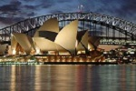
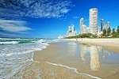
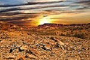
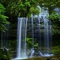
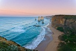
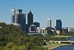
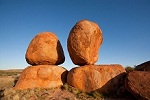
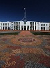

New South Wales | Queensland | South Australia | Tasmania | Victoria | Western Australia | Northern Territory | Austrilian Capital Territory
New South Wales (NSW) is Australia's most populous state. Sydney is located in NSW on the eastern coast and is home to the Sydney Symphony Orchestra. National parks include the Royal National Park, Wollemi National Park and the Mutawintji National Park in western New South Wales.
Queensland, named after Queen Victoria, is located in the northeast portion of Australia. It is home to the famous Gold Coast and to the Great Barrier Reef. The state capital is Brisbane. In addition to the Great Barrier Reef, it is home to other World Heritage preservation areas including the Gondwana Rainforests and Fraser Island.
The state of South Australia is located in the south central part of Australia. The terrain consists of low mountain ranges and semi-arid and arid rangelands. The state possesses the single largest deposit of uranium in the world.
Tasmania is an island state 240 kilometers south of the mainland. Its geography consists mainly of rounded smooth mountains, and it is the most mountainous state in Australia. It is known for its unique flora and fauna. It has diverse vegetation ranging from grasslands to temperate rainforests. It is home to the famous Tasmanian devil.
Victoria is the second most populous state in Australia, and the smallest mainland state. The state capital is Melbourne. The terrain includes the Victorian Alps in the northeast and an extensive series of river systems.
The state of Western Australia occupies the entire western third of the Australian mainland. Its capital city is Perth. The southwest coast has a Mediterranean climate. It is home to the Western Australian Academy of Performing Arts (WAAPA) and the West Australian Symphony Orchestra (WASO).
The Northern Territory is a federal territory of Australia, occupying the north central part of the mainland. It is home to two natural rock formations, Uluru (Ayers Rock) and Kata Tjuta (The Olgas). These locations are sacred to the local Aboriginal peoples and have become major tourist attractions.
The Australian Capital Territory (ACT) is located entirely within New South Wales. It is home to Australia's capital city, Canberra. Canberra is a planned city and the major roads follow a wheel-and-spoke pattern.
